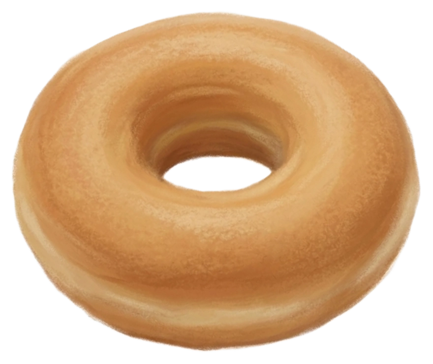

🟠⚪AJUSTES
Listas de Prioridade
Ordene as Listas de Prioridade com sua preferência
1
2
3
Luminosidade
Tamanho de texto
Cópias de Notas
Orbs

noteous donut
2ª Geração
SEU CONTEÚDO NO NOTEOUS
⚠️ IMPORTANTE
Suas anotações são salvas localmente no dispositivo. Ou seja: se você limpar os dados ou desinstalar o navegador, suas notas serão apagadas. Para evitar perda de dados, use o recurso Cópias de Notas em Ajustes
Desenvolvido por Éverton Ruan
noteous é um projeto de código aberto, disponível no GitHub →
Quer saber mais sobre este projeto? Acesse meu canal no YouTube ▶